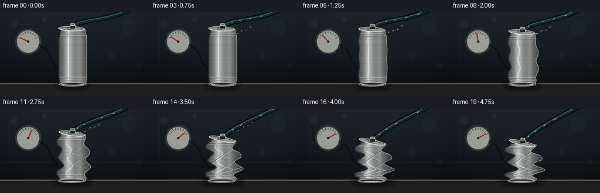
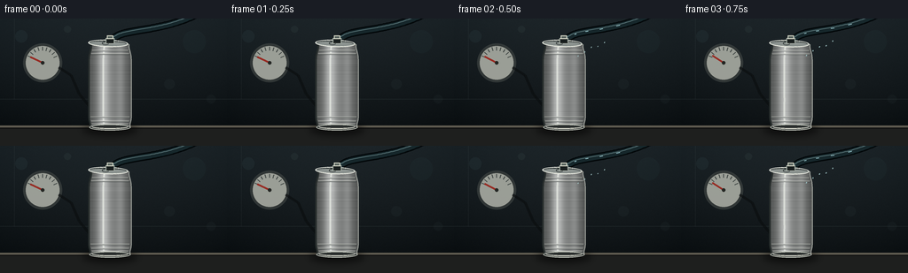
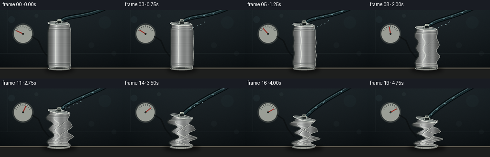
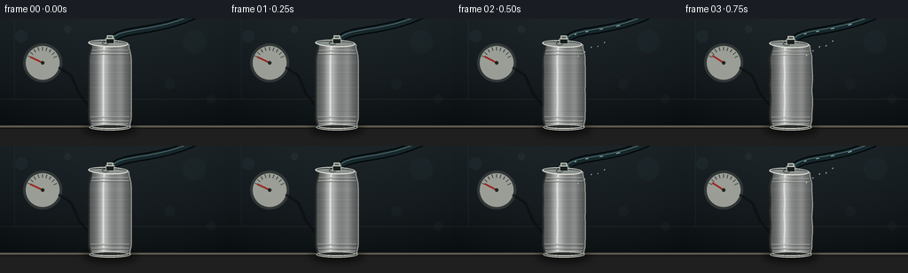

CODING AGENTS AS PIXEL WORLD MODELS
traex/GPT-5.6-Sol · phygen_019
点击播放 · 原生 RGB 像素
逐轮保存的候选
回放视频、检查图与代码变化。
每份候选均可单独播放。实际图片检查记录在下方工具轨迹中。
候选 01播放与检查图
点击播放 · 原生 RGB 像素


展开代码变化
--- 上一保存版本
+++ 本次保存版本
@@ -0,0 +1,260 @@
+from pathlib import Path
+import math
+import numpy as np
+from PIL import Image, ImageDraw, ImageFilter
+import artifact_io
+
+W, H, N = 256, 144, 20
+S = 4
+WW, HH = W*S, H*S
+rng = np.random.default_rng(19019)
+
+
+def ss(a, b, x):
+ x = min(1.0, max(0.0, (x-a)/(b-a)))
+ return x*x*(3-2*x)
+
+
+def pts_scaled(points):
+ return [(int(round(x*S)), int(round(y*S))) for x, y in points]
+
+
+def gauss(v, c, w):
+ return math.exp(-((v-c)/w)**2)
+
+# Stable, softly textured laboratory backdrop.
+yy, xx = np.mgrid[0:HH, 0:WW]
+base = np.zeros((HH, WW, 3), dtype=np.float32)
+vertical = yy / HH
+vignette = ((xx-WW*.52)/(WW*.78))**2 + ((yy-HH*.46)/(HH*.9))**2
+for c, (top, bot) in enumerate(zip((31, 39, 43), (12, 16, 18))):
+ base[..., c] = top*(1-vertical) + bot*vertical - 10*vignette
+# Fixed fine grain prevents sterile flatness without temporal flicker.
+noise = rng.normal(0, 1.45, (HH, WW, 1))
+base += noise
+base = np.clip(base, 0, 255).astype(np.uint8)
+
+# Background bokeh, fixed positions.
+bokeh = [(24,20,7,(71,100,105)), (219,26,13,(42,70,73)), (191,74,6,(55,75,75)),
+ (76,12,4,(84,104,102)), (238,91,5,(54,68,67))]
+
+
+def can_boundaries(q, v):
+ """Asymmetric pressure-buckled shell boundaries, local y v in [0,1]."""
+ # A new beverage can has slight shoulder/base taper.
+ edge_taper = 2.8*gauss(v, .015, .09) + 1.6*gauss(v, .98, .055)
+ base_hw = 24.0 - edge_taper
+ # Alternating inward dents and outward folds on opposite walls.
+ ld = (6.0*gauss(v,.17,.105) - 10.8*gauss(v,.34,.095) +
+ 8.1*gauss(v,.50,.10) - 12.2*gauss(v,.66,.09) +
+ 7.8*gauss(v,.82,.085) - 3.0*gauss(v,.92,.045))
+ rd = (-8.6*gauss(v,.21,.09) + 9.8*gauss(v,.38,.105) -
+ 12.0*gauss(v,.54,.085) + 8.7*gauss(v,.70,.10) -
+ 7.2*gauss(v,.85,.07) + 3.0*gauss(v,.94,.04))
+ # Overall sideways shear appears only as the shell loses stability.
+ shift = q*(2.1*math.sin(math.pi*(v+.08)) - 3.1*math.sin(2.45*math.pi*v))
+ onset = q**1.08
+ left_hw = max(9.5, base_hw + onset*ld)
+ right_hw = max(9.5, base_hw + onset*rd)
+ # Fine kinks sharpen late, evoking thin sheet metal rather than rubber.
+ kink = max(0.0, (q-.28)/.72)
+ shift += kink*(1.4*math.sin(9*math.pi*v) + .7*math.sin(15*math.pi*v))
+ return 124.0 + shift - left_hw, 124.0 + shift + right_hw
+
+
+def draw_background(t):
+ im = Image.fromarray(base.copy(), 'RGB')
+ d = ImageDraw.Draw(im, 'RGBA')
+ for bx,by,br,col in bokeh:
+ d.ellipse(((bx-br)*S,(by-br)*S,(bx+br)*S,(by+br)*S), fill=col+(28,))
+ # Wall seam and a subdued instrument shelf.
+ d.line([(0,91*S),(WW,91*S)], fill=(87,102,102,35), width=S)
+ d.line([(16*S,0),(16*S,91*S)], fill=(120,134,132,17), width=S)
+ # Workbench and its lit front lip.
+ d.rectangle((0,121*S,WW,HH), fill=(30,31,30,255))
+ d.rectangle((0,121*S,WW,123*S), fill=(95,91,80,255))
+ d.line([(0,124*S),(WW,124*S)], fill=(13,13,13,180), width=S)
+ # Muted vacuum gauge on rear wall.
+ gx, gy, gr = 48*S, 50*S, 20*S
+ d.ellipse((gx-gr-2*S,gy-gr-2*S,gx+gr+2*S,gy+gr+2*S), fill=(9,12,13,180), outline=(100,109,106,105), width=2*S)
+ d.ellipse((gx-gr,gy-gr,gx+gr,gy+gr), fill=(198,201,190,195), outline=(35,40,40,220), width=S)
+ for a in np.linspace(math.radians(205), math.radians(335), 9):
+ r0, r1 = 14*S, 18*S
+ d.line([(gx+math.cos(a)*r0,gy+math.sin(a)*r0),(gx+math.cos(a)*r1,gy+math.sin(a)*r1)], fill=(26,34,34,180), width=S)
+ # Needle sweeps toward deep vacuum as evacuation progresses.
+ qg = ss(.03,.88,t)
+ ang = math.radians(205 + 126*qg)
+ d.line([(gx,gy),(gx+math.cos(ang)*15*S,gy+math.sin(ang)*15*S)], fill=(151,37,29,240), width=2*S)
+ d.ellipse((gx-2*S,gy-2*S,gx+2*S,gy+2*S), fill=(36,38,35,255))
+ # Gauge line disappearing behind can.
+ d.line(pts_scaled([(66,55),(80,64),(89,85),(103,102)]), fill=(10,13,14,165), width=3*S)
+ return im
+
+
+def draw_hose(im, t, nozzle_y):
+ d = ImageDraw.Draw(im, 'RGBA')
+ # Cubic Bezier from can fitting to offscreen vacuum source.
+ p0=np.array([126.0,nozzle_y]); p1=np.array([136.0,nozzle_y-16]); p2=np.array([177.0,18]); p3=np.array([226.0,-7])
+ curve=[]
+ for u in np.linspace(0,1,70):
+ p=(1-u)**3*p0+3*(1-u)**2*u*p1+3*(1-u)*u*u*p2+u**3*p3
+ curve.append(tuple(p))
+ sc=pts_scaled(curve)
+ d.line(sc, fill=(3,8,10,210), width=9*S, joint='curve')
+ d.line(sc, fill=(22,39,43,255), width=6*S, joint='curve')
+ d.line([(x-1*S,y-1*S) for x,y in sc], fill=(89,116,119,120), width=S, joint='curve')
+ # Pale moving slugs inside the translucent tube imply rapid outward flow.
+ flow = ss(.04,.78,t)
+ if flow > .02:
+ for k in range(4):
+ u=(.16*k + t*.82) % .78 + .12
+ p=(1-u)**3*p0+3*(1-u)**2*u*p1+3*(1-u)*u*u*p2+u**3*p3
+ u2=min(1,u+.032)
+ pnext=(1-u2)**3*p0+3*(1-u2)**2*u2*p1+3*(1-u2)*u2*u2*p2+u2**3*p3
+ d.line(pts_scaled([p,pnext]), fill=(159,208,215,int(70+100*flow)), width=S)
+
+
+def draw_can(im, frame_idx):
+ t=frame_idx/(N-1)
+ q=ss(.10,.96,t)
+ # Time-lapse: initially resistant, then accelerating structural collapse.
+ qshape=q**1.18
+ height=94.0 - 31.0*(qshape**1.2)
+ ytop=123.0-height
+
+ # Soft contact shadow broadens when the shell is crushed.
+ sh=Image.new('RGBA',(WW,HH),(0,0,0,0)); sd=ImageDraw.Draw(sh)
+ sw=(31+9*qshape)*S
+ sd.ellipse((124*S-sw,119*S,124*S+sw,132*S), fill=(0,0,0,150))
+ sh=sh.filter(ImageFilter.GaussianBlur(4*S))
+ im=Image.alpha_composite(im.convert('RGBA'),sh)
+
+ # Hose is behind the fitting/can but remains visibly attached as top descends.
+ draw_hose(im,t,ytop-4)
+
+ samples=[]
+ for v in np.linspace(0,1,181):
+ l,r=can_boundaries(qshape,float(v))
+ y=ytop+v*height
+ samples.append((l,r,y,v))
+ poly=[(l,y) for l,r,y,v in samples]+[(r,y) for l,r,y,v in reversed(samples)]
+ mask=Image.new('L',(WW,HH),0)
+ ImageDraw.Draw(mask).polygon(pts_scaled(poly),fill=255)
+
+ # Metallic cylinder shading with brushed anisotropic texture.
+ arr=np.zeros((HH,WW,4),dtype=np.uint8)
+ cx=124*S
+ for X in range(WW):
+ xn=(X-cx)/(25*S)
+ lum=(119 + 64*math.exp(-((xn+.30)/.26)**2) +
+ 24*math.exp(-((xn-.48)/.18)**2) - 48*abs(xn)**1.7)
+ arr[:,X,0]=np.clip(lum+7,0,255)
+ arr[:,X,1]=np.clip(lum+9,0,255)
+ arr[:,X,2]=np.clip(lum+8,0,255)
+ arr[:,X,3]=255
+ # Horizontal brushed grain, static but mapped onto deforming shell.
+ grain_y=(rng_for_frame(frame_idx, HH)*5.0).astype(np.int16)
+ for y in range(HH):
+ arr[y,:,:3]=np.clip(arr[y,:,:3].astype(np.int16)+grain_y[y],0,255)
+ metal=Image.fromarray(arr,'RGBA')
+ metal.putalpha(mask)
+ im=Image.alpha_composite(im,metal)
+
+ details=Image.new('RGBA',(WW,HH),(0,0,0,0)); dd=ImageDraw.Draw(details,'RGBA')
+ # Dark and bright shell edges.
+ leftline=[(l,y) for l,r,y,v in samples]
+ rightline=[(r,y) for l,r,y,v in samples]
+ dd.line(pts_scaled(leftline),fill=(37,43,42,245),width=2*S)
+ dd.line(pts_scaled(rightline),fill=(239,242,231,150),width=S)
+ # Long specular strips bend with the centerline and fade as crumpling dominates.
+ spec=[]
+ for l,r,y,v in samples:
+ x=l+.34*(r-l)+qshape*1.2*math.sin(v*8)
+ spec.append((x,y))
+ dd.line(pts_scaled(spec),fill=(245,249,240,int(140-40*qshape)),width=2*S)
+
+ # Manufacturing ribs, following deformed boundaries.
+ for vv in [.08,.12,.88,.93,.965]:
+ l,r=can_boundaries(qshape,vv); y=ytop+vv*height
+ dd.line(pts_scaled([(l+1,y),(r-1,y)]),fill=(49,56,55,135),width=S)
+ dd.line(pts_scaled([(l+2,y-.7),(r-2,y-.7)]),fill=(238,240,230,95),width=S)
+
+ # Angular pressure creases emerge and intensify; clip them to body below.
+ crease=Image.new('RGBA',(WW,HH),(0,0,0,0)); cd=ImageDraw.Draw(crease,'RGBA')
+ strength=int(220*ss(.18,.85,qshape))
+ if strength:
+ crease_specs=[(.04,.34,.47),(.96,.23,.51),(.02,.57,.73),(.98,.45,.67),(.08,.77,.91),(.92,.68,.87)]
+ for side,v1,v2 in crease_specs:
+ l1,r1=can_boundaries(qshape,v1); l2,r2=can_boundaries(qshape,v2)
+ x1=l1+(r1-l1)*side; x2=l2+(r2-l2)*(1-side)*.78+(l2 if side<.5 else 0)*0
+ # Explicit interior target gives diagonal folded facets.
+ if side<.5: x2=l2+.70*(r2-l2)
+ else: x2=l2+.27*(r2-l2)
+ y1=ytop+v1*height; y2=ytop+v2*height
+ cd.line(pts_scaled([(x1,y1),(x2,y2)]),fill=(31,37,37,strength),width=S)
+ cd.line(pts_scaled([(x1+1.1,y1),(x2+1.1,y2)]),fill=(250,250,237,int(strength*.62)),width=S)
+ crease.putalpha(Image.composite(crease.getchannel('A'),Image.new('L',(WW,HH),0),mask))
+ details=Image.alpha_composite(details,crease)
+
+ im=Image.alpha_composite(im,details)
+
+ # Bottom rolled rim stays recognizable and anchored to bench.
+ d=ImageDraw.Draw(im,'RGBA')
+ lb,rb=can_boundaries(qshape,.985)
+ d.ellipse((int((lb-1)*S),int(119.5*S),int((rb+1)*S),int(126.5*S)), fill=(44,48,47,220), outline=(194,198,188,220), width=S)
+ d.arc((int((lb+2)*S),int(120*S),int((rb-2)*S),int(124.8*S)),0,180,fill=(247,247,232,150),width=S)
+
+ # Top lid/rim, increasingly tilted and slightly folded but still sealed.
+ top_l,top_r=can_boundaries(qshape,.012)
+ lidw=(top_r-top_l+3)*S; lidh=8*S
+ lid=Image.new('RGBA',(int(lidw+12*S),int(lidh+12*S)),(0,0,0,0))
+ ld=ImageDraw.Draw(lid,'RGBA')
+ box=(4*S,4*S,int(lidw+4*S),int(lidh+4*S))
+ ld.ellipse(box,fill=(139,146,143,255),outline=(236,238,226,255),width=S)
+ ld.arc((6*S,5*S,int(lidw+2*S),int(lidh+2*S)),180,355,fill=(41,47,46,220),width=S)
+ # Closed pull tab and central vacuum fitting.
+ mx=(lidw+8*S)/2
+ ld.ellipse((mx-7*S,6*S,mx+1*S,10*S),outline=(63,70,68,210),width=S)
+ angle=-2-11*qshape
+ lid=lid.rotate(angle,resample=Image.Resampling.BICUBIC,expand=True)
+ lx=int(((top_l+top_r)/2)*S-lid.width/2); ly=int((ytop-4.8)*S-lid.height/2+6*S)
+ im.alpha_composite(lid,(lx,ly))
+
+ # Brass/rubber airtight adapter over the lid. This makes evacuation legible.
+ d=ImageDraw.Draw(im,'RGBA')
+ nx=(top_l+top_r)/2 - .8*qshape
+ ny=ytop-5.0
+ d.rectangle((int((nx-5)*S),int((ny-2)*S),int((nx+5)*S),int((ny+4)*S)),fill=(27,33,33,255),outline=(171,180,170,240),width=S)
+ d.rectangle((int((nx-3.5)*S),int((ny-5)*S),int((nx+3.5)*S),int((ny-1)*S)),fill=(88,99,94,255),outline=(217,219,202,230),width=S)
+ d.line(pts_scaled([(nx-4,ny+3),(nx+4,ny+3)]),fill=(5,8,8,240),width=S)
+
+ # A few fast dust motes drawn toward the hose during strongest evacuation.
+ pull=math.sin(math.pi*min(1,t/.86))**2
+ if pull>.08:
+ for k in range(5):
+ u=(k*.19+t*.8)%1
+ px=137+u*39; py=42-u*19 + math.sin(k*2.1+t*8)*1.4
+ d.line(pts_scaled([(px-3*pull,py+1.2),(px,py)]),fill=(158,193,194,int(35+80*pull)),width=S)
+ return im.convert('RGB')
+
+
+def rng_for_frame(frame_idx, length):
+ # Same brushed pattern in all frames: deformation, not noise flicker, carries motion.
+ rr=np.random.default_rng(731)
+ vals=rr.normal(0,1,length)
+ vals=(vals+np.roll(vals,1)+np.roll(vals,-1))/3
+ return vals
+
+
+def generate():
+ out=[]
+ for i in range(N):
+ im=draw_background(i/(N-1))
+ im=draw_can(im,i)
+ im=im.resize((W,H),Image.Resampling.LANCZOS)
+ out.append(np.asarray(im,dtype=np.uint8))
+ return np.stack(out,axis=0)
+
+if __name__=='__main__':
+ frames=generate()
+ artifact_io.save(frames,Path(__file__).resolve().parent)
候选 02播放与检查图
点击播放 · 原生 RGB 像素


展开代码变化
--- 上一保存版本
+++ 本次保存版本
@@ -54,8 +54,13 @@
# Overall sideways shear appears only as the shell loses stability.
shift = q*(2.1*math.sin(math.pi*(v+.08)) - 3.1*math.sin(2.45*math.pi*v))
onset = q**1.08
- left_hw = max(9.5, base_hw + onset*ld)
- right_hw = max(9.5, base_hw + onset*rd)
+ # Both sides are driven inward at three crushing bands. The alternating
+ # terms above keep this from looking like an elastic/hourglass squeeze:
+ # one lip of each band turns outward while the adjacent sheet folds in.
+ pinch = onset*(6.0*gauss(v,.34,.11) + 8.2*gauss(v,.58,.105) +
+ 6.8*gauss(v,.79,.085))
+ left_hw = max(7.7, base_hw + onset*ld - pinch)
+ right_hw = max(7.7, base_hw + onset*rd - pinch)
# Fine kinks sharpen late, evoking thin sheet metal rather than rubber.
kink = max(0.0, (q-.28)/.72)
shift += kink*(1.4*math.sin(9*math.pi*v) + .7*math.sin(15*math.pi*v))
@@ -63,7 +68,7 @@
def draw_background(t):
- im = Image.fromarray(base.copy(), 'RGB')
+ im = Image.fromarray(base.copy())
d = ImageDraw.Draw(im, 'RGBA')
for bx,by,br,col in bokeh:
d.ellipse(((bx-br)*S,(by-br)*S,(bx+br)*S,(by+br)*S), fill=col+(28,))
@@ -116,10 +121,10 @@
def draw_can(im, frame_idx):
t=frame_idx/(N-1)
- q=ss(.10,.96,t)
+ q=ss(.00,.96,t)
# Time-lapse: initially resistant, then accelerating structural collapse.
qshape=q**1.18
- height=94.0 - 31.0*(qshape**1.2)
+ height=94.0 - 38.0*(qshape**1.2)
ytop=123.0-height
# Soft contact shadow broadens when the shell is crushed.
@@ -156,7 +161,7 @@
grain_y=(rng_for_frame(frame_idx, HH)*5.0).astype(np.int16)
for y in range(HH):
arr[y,:,:3]=np.clip(arr[y,:,:3].astype(np.int16)+grain_y[y],0,255)
- metal=Image.fromarray(arr,'RGBA')
+ metal=Image.fromarray(arr)
metal.putalpha(mask)
im=Image.alpha_composite(im,metal)
可观测工具轨迹
实际执行的命令与返回图片。
命令 1exit 0
/bin/bash -lc "ls -la && printf '\\n--- prompt.txt ---\\n' && cat prompt.txt && printf '\\n--- GENERATION_RULES.md ---\\n' && cat GENERATION_RULES.md && printf '\\n--- task_spec.json ---\\n' && cat task_spec.json"
命令 2exit 0
/bin/bash -lc "find . -maxdepth 2 -type f -printf '%p\\n' | sort && printf '\\nTools:\\n' && command -v ffmpeg || true && command -v python3 || true && python3 - <<'PY' mods=['PIL','numpy','cv2','imageio','cairo'] for m in mods: try: x=__import__(m); print(m, 'OK', getattr(x,'__version__','')) except Exception as e: print(m,'NO',type(e).__name__) PY"
命令 3exit 0
/bin/bash -lc 'cat artifact_io.py'
命令 4exit 0
/bin/bash -lc "cat > generate.py <<'PY'
from pathlib import Path
import math
import numpy as np
from PIL import Image, ImageDraw, ImageFilter
import artifact_io
W, H, N = 256, 144, 20
S = 4
WW, HH = W*S, H*S
rng = np.random.default_rng(19019)
def ss(a, b, x):
x = min(1.0, max(0.0, (x-a)/(b-a)))
return x*x*(3-2*x)
def pts_scaled(points):
return [(int(round(x*S)), int(round(y*S))) for x, y in points]
def gauss(v, c, w):
return math.exp(-((v-c)/w)**2)
# Stable, softly textured laboratory backdrop.
yy, xx = np.mgrid[0:HH, 0:WW]
base = np.zeros((HH, WW, 3), dtype=np.float32)
vertical = yy / HH
vignette = ((xx-WW*.52)/(WW*.78))**2 + ((yy-HH*.46)/(HH*.9))**2
for c, (top, bot) in enumerate(zip((31, 39, 43), (12, 16, 18))):
base[..., c] = top*(1-vertical) + bot*vertical - 10*vignette
# Fixed fine grain prevents sterile flatness without temporal flicker.
noise = rng.normal(0, 1.45, (HH, WW, 1))
base += noise
base = np.clip(base, 0, 255).astype(np.uint8)
# Background bokeh, fixed positions.
bokeh = [(24,20,7,(71,100,105)), (219,26,13,(42,70,73)), (191,74,6,(55,75,75)),
(76,12,4,(84,104,102)), (238,91,5,(54,68,67))]
def can_boundaries(q, v):
\"\"\"Asymmetric pressure-buckled shell boundaries, local y v in [0,1].\"\"\"
# A new beverage can has slight shoulder/base taper.
edge_taper = 2.8*gauss(v, .015, .09) + 1.6*gauss(v, .98, .055)
base_hw = 24.0 - edge_taper
# Alternating inward dents and outward folds on opposite walls.
ld = (6.0*gauss(v,.17,.105) - 10.8*gauss(v,.34,.095) +
8.1*gauss(v,.50,.10) - 12.2*gauss(v,.66,.09) +
7.8*gauss(v,.82,.085) - 3.0*gauss(v,.92,.045))
rd = (-8.6*gauss(v,.21,.09) + 9.8*gauss(v,.38,.105) -
12.0*gauss(v,.54,.085) + 8.7*gauss(v,.70,.10) -
7.2*gauss(v,.85,.07) + 3.0*gauss(v,.94,.04))
# Overall sideways shear appears only as the shell loses stability.
shift = q*(2.1*math.sin(math.pi*(v+.08)) - 3.1*math.sin(2.45*math.pi*v))
onset = q**1.08
left_hw = max(9.5, base_hw + onset*ld)
right_hw = max(9.5, base_hw + onset*rd)
# Fine kinks sharpen late, evoking thin sheet metal rather than rubber.
kink = max(0.0, (q-.28)/.72)
shift += kink*(1.4*math.sin(9*math.pi*v) + .7*math.sin(15*math.pi*v))
return 124.0 + shift - left_hw, 124.0 + shift + right_hw
def draw_background(t):
im = Image.fromarray(base.copy(), 'RGB')
d = ImageDraw.Draw(im, 'RGBA')
for bx,by,br,col in bokeh:
d.ellipse(((bx-br)*S,(by-br)*S,(bx+br)*S,(by+br)*S), fill=col+(28,))
# Wall seam and a subdued instrument shelf.
d.line([(0,91*S),(WW,91*S)], fill=(87,102,102,35), width=S)
d.line([(16*S,0),(16*S,91*S)], fill=(120,134,132,17), width=S)
# Workbench and its lit front lip.
d.rectangle((0,121*S,WW,HH), fill=(30,31,30,255))
d.rectangle((0,121*S,WW,123*S), fill=(95,91,80,255))
d.line([(0,124*S),(WW,124*S)], fill=(13,13,13,180), width=S)
# Muted vacuum gauge on rear wall.
gx, gy, gr = 48*S, 50*S, 20*S
d.ellipse((gx-gr-2*S,gy-gr-2*S,gx+gr+2*S,gy+gr+2*S), fill=(9,12,13,180), outline=(100,109,106,105), width=2*S)
d.ellipse((gx-gr,gy-gr,gx+gr,gy+gr), fill=(198,201,190,195), outline=(35,40,40,220), width=S)
for a in np.linspace(math.radians(205), math.radians(335), 9):
r0, r1 = 14*S, 18*S
d.line([(gx+math.cos(a)*r0,gy+math.sin(a)*r0),(gx+math.cos(a)*r1,gy+math.sin(a)*r1)], fill=(26,34,34,180), width=S)
# Needle sweeps toward deep vacuum as evacuation progresses.
qg = ss(.03,.88,t)
ang = math.radians(205 + 126*qg)
d.line([(gx,gy),(gx+math.cos(ang)*15*S,gy+math.sin(ang)*15*S)], fill=(151,37,29,240), width=2*S)
d.ellipse((gx-2*S,gy-2*S,gx+2*S,gy+2*S), fill=(36,38,35,255))
# Gauge line disappearing behind can.
d.line(pts_scaled([(66,55),(80,64),(89,85),(103,102)]), fill=(10,13,14,165), width=3*S)
return im
def draw_hose(im, t, nozzle_y):
d = ImageDraw.Draw(im, 'RGBA')
# Cubic Bezier from can fitting to offscreen vacuum source.
p0=np.array([126.0,nozzle_y]); p1=np.array([136.0,nozzle_y-16]); p2=np.array([177.0,18]); p3=np.array([226.0,-7])
curve=[]
for u in np.linspace(0,1,70):
p=(1-u)**3*p0+3*(1-u)**2*u*p1+3*(1-u)*u*u*p2+u**3*p3
curve.append(tuple(p))
sc=pts_scaled(curve)
d.line(sc, fill=(3,8,10,210), width=9*S, joint='curve')
d.line(sc, fill=(22,39,43,255), width=6*S, joint='curve')
d.line([(x-1*S,y-1*S) for x,y in sc], fill=(89,116,119,120), width=S, joint='curve')
# Pale moving slugs inside the translucent tube imply rapid outward flow.
flow = ss(.04,.78,t)
if flow > .02:
for k in range(4):
u=(.16*k + t*.82) % .78 + .12
p=(1-u)**3*p0+3*(1-u)**2*u*p1+3*(1-u)*u*u*p2+u**3*p3
u2=min(1,u+.032)
pnext=(1-u2)**3*p0+3*(1-u2)**2*u2*p1+3*(1-u2)*u2*u2*p2+u2**3*p3
d.line(pts_scaled([p,pnext]), fill=(159,208,215,int(70+100*flow)), width=S)
def draw_can(im, frame_idx):
t=frame_idx/(N-1)
q=ss(.10,.96,t)
# Time-lapse: initially resistant, then accelerating structural collapse.
qshape=q**1.18
height=94.0 - 31.0*(qshape**1.2)
ytop=123.0-height
# Soft contact shadow broadens when the shell is crushed.
sh=Image.new('RGBA',(WW,HH),(0,0,0,0)); sd=ImageDraw.Draw(sh)
sw=(31+9*qshape)*S
sd.ellipse((124*S-sw,119*S,124*S+sw,132*S), fill=(0,0,0,150))
sh=sh.filter(ImageFilter.GaussianBlur(4*S))
im=Image.alpha_composite(im.convert('RGBA'),sh)
# Hose is behind the fitting/can but remains visibly attached as top descends.
draw_hose(im,t,ytop-4)
samples=[]
for v in np.linspace(0,1,181):
l,r=can_boundaries(qshape,float(v))
y=ytop+v*height
samples.append((l,r,y,v))
poly=[(l,y) for l,r,y,v in samples]+[(r,y) for l,r,y,v in reversed(samples)]
mask=Image.new('L',(WW,HH),0)
ImageDraw.Draw(mask).polygon(pts_scaled(poly),fill=255)
# Metallic cylinder shading with brushed anisotropic texture.
arr=np.zeros((HH,WW,4),dtype=np.uint8)
cx=124*S
for X in range(WW):
xn=(X-cx)/(25*S)
lum=(119 + 64*math.exp(-((xn+.30)/.26)**2) +
24*math.exp(-((xn-.48)/.18)**2) - 48*abs(xn)**1.7)
arr[:,X,0]=np.clip(lum+7,0,255)
arr[:,X,1]=np.clip(lum+9,0,255)
arr[:,X,2]=np.clip(lum+8,0,255)
arr[:,X,3]=255
# Horizontal brushed grain, static but mapped onto deforming shell.
grain_y=(rng_for_frame(frame_idx, HH)*5.0).astype(np.int16)
for y in range(HH):
arr[y,:,:3]=np.clip(arr[y,:,:3].astype(np.int16)+grain_y[y],0,255)
metal=Image.fromarray(arr,'RGBA')
metal.putalpha(mask)
im=Image.alpha_composite(im,metal)
details=Image.new('RGBA',(WW,HH),(0,0,0,0)); dd=ImageDraw.Draw(details,'RGBA')
# Dark and bright shell edges.
leftline=[(l,y) for l,r,y,v in samples]
rightline=[(r,y) for l,r,y,v in samples]
dd.line(pts_scaled(leftline),fill=(37,43,42,245),width=2*S)
dd.line(pts_scaled(rightline),fill=(239,242,231,150),width=S)
# Long specular strips bend with the centerline and fade as crumpling dominates.
spec=[]
for l,r,y,v in samples:
x=l+.34*(r-l)+qshape*1.2*math.sin(v*8)
spec.append((x,y))
dd.line(pts_scaled(spec),fill=(245,249,240,int(140-40*qshape)),width=2*S)
# Manufacturing ribs, following deformed boundaries.
for vv in [.08,.12,.88,.93,.965]:
l,r=can_boundaries(qshape,vv); y=ytop+vv*height
dd.line(pts_scaled([(l+1,y),(r-1,y)]),fill=(49,56,55,135),width=S)
dd.line(pts_scaled([(l+2,y-.7),(r-2,y-.7)]),fill=(238,240,230,95),width=S)
# Angular pressure creases emerge and intensify; clip them to body below.
crease=Image.new('RGBA',(WW,HH),(0,0,0,0)); cd=ImageDraw.Draw(crease,'RGBA')
strength=int(220*ss(.18,.85,qshape))
if strength:
crease_specs=[(.04,.34,.47),(.96,.23,.51),(.02,.57,.73),(.98,.45,.67),(.08,.77,.91),(.92,.68,.87)]
for side,v1,v2 in crease_specs:
l1,r1=can_boundaries(qshape,v1); l2,r2=can_boundaries(qshape,v2)
x1=l1+(r1-l1)*side; x2=l2+(r2-l2)*(1-side)*.78+(l2 if side<.5 else 0)*0
# Explicit interior target gives diagonal folded facets.
if side<.5: x2=l2+.70*(r2-l2)
else: x2=l2+.27*(r2-l2)
y1=ytop+v1*height; y2=ytop+v2*height
cd.line(pts_scaled([(x1,y1),(x2,y2)]),fill=(31,37,37,strength),width=S)
cd.line(pts_scaled([(x1+1.1,y1),(x2+1.1,y2)]),fill=(250,250,237,int(strength*.62)),width=S)
crease.putalpha(Image.composite(crease.getchannel('A'),Image.new('L',(WW,HH),0),mask))
details=Image.alpha_composite(details,crease)
im=Image.alpha_composite(im,details)
# Bottom rolled rim stays recognizable and anchored to bench.
d=ImageDraw.Draw(im,'RGBA')
lb,rb=can_boundaries(qshape,.985)
d.ellipse((int((lb-1)*S),int(119.5*S),int((rb+1)*S),int(126.5*S)), fill=(44,48,47,220), outline=(194,198,188,220), width=S)
d.arc((int((lb+2)*S),int(120*S),int((rb-2)*S),int(124.8*S)),0,180,fill=(247,247,232,150),width=S)
# Top lid/rim, increasingly tilted and slightly folded but still sealed.
top_l,top_r=can_boundaries(qshape,.012)
lidw=(top_r-top_l+3)*S; lidh=8*S
lid=Image.new('RGBA',(int(lidw+12*S),int(lidh+12*S)),(0,0,0,0))
ld=ImageDraw.Draw(lid,'RGBA')
box=(4*S,4*S,int(lidw+4*S),int(lidh+4*S))
ld.ellipse(box,fill=(139,146,143,255),outline=(236,238,226,255),width=S)
ld.arc((6*S,5*S,int(lidw+2*S),int(lidh+2*S)),180,355,fill=(41,47,46,220),width=S)
# Closed pull tab and central vacuum fitting.
mx=(lidw+8*S)/2
ld.ellipse((mx-7*S,6*S,mx+1*S,10*S),outline=(63,70,68,210),width=S)
angle=-2-11*qshape
lid=lid.rotate(angle,resample=Image.Resampling.BICUBIC,expand=True)
lx=int(((top_l+top_r)/2)*S-lid.width/2); ly=int((ytop-4.8)*S-lid.height/2+6*S)
im.alpha_composite(lid,(lx,ly))
# Brass/rubber airtight adapter over the lid. This makes evacuation legible.
d=ImageDraw.Draw(im,'RGBA')
nx=(top_l+top_r)/2 - .8*qshape
ny=ytop-5.0
d.rectangle((int((nx-5)*S),int((ny-2)*S),int((nx+5)*S),int((ny+4)*S)),fill=(27,33,33,255),outline=(171,180,170,240),width=S)
d.rectangle((int((nx-3.5)*S),int((ny-5)*S),int((nx+3.5)*S),int((ny-1)*S)),fill=(88,99,94,255),outline=(217,219,202,230),width=S)
d.line(pts_scaled([(nx-4,ny+3),(nx+4,ny+3)]),fill=(5,8,8,240),width=S)
# A few fast dust motes drawn toward the hose during strongest evacuation.
pull=math.sin(math.pi*min(1,t/.86))**2
if pull>.08:
for k in range(5):
u=(k*.19+t*.8)%1
px=137+u*39; py=42-u*19 + math.sin(k*2.1+t*8)*1.4
d.line(pts_scaled([(px-3*pull,py+1.2),(px,py)]),fill=(158,193,194,int(35+80*pull)),width=S)
return im.convert('RGB')
def rng_for_frame(frame_idx, length):
# Same brushed pattern in all frames: deformation, not noise flicker, carries motion.
rr=np.random.default_rng(731)
vals=rr.normal(0,1,length)
vals=(vals+np.roll(vals,1)+np.roll(vals,-1))/3
return vals
def generate():
out=[]
for i in range(N):
im=draw_background(i/(N-1))
im=draw_can(im,i)
im=im.resize((W,H),Image.Resampling.LANCZOS)
out.append(np.asarray(im,dtype=np.uint8))
return np.stack(out,axis=0)
if __name__=='__main__':
frames=generate()
artifact_io.save(frames,Path(__file__).resolve().parent)
PY
python3 generate.py
ls -lh pixels.npz inspection.png transition_check.png index.html
python3 - <<'PY'
import numpy as np
z=np.load('pixels.npz')['pixels']
print(z.shape,z.dtype,hex(int(z.min())),hex(int(z.max())))
PY"命令 5exit 1
/bin/bash -lc "python3 - <<'PY' from generate import can_boundaries,ss,N for i in [0,2,4,6,8,10,12,14,16,18,19]: t=i/(N-1); q=ss(.10,.96,t)**1.18; h=94-31*q**1.2 widths=[] for v in [0,.17,.34,.5,.66,.82,.98]: l,r=can_boundaries(q,v); widths.append(round(r-l,1)) print(i,'q',round(q,3),'height',round(h,1),'widths',widths) PY sha256sum pixels.npz inspection.png generate.py python3 generate.py >/tmp/regenerate.log 2>&1 sha256sum pixels.npz inspection.png generate.py cat /tmp/regenerate.log"
命令 6exit 0
/bin/bash -lc "python3 - <<'PY'
import generate, numpy as np
f=generate.generate()
print('frames',f.shape,f.dtype,'range',f.min(),f.max())
for i in range(1,len(f)):
d=np.abs(f[i].astype(np.int16)-f[i-1].astype(np.int16))
print(f'{i-1:02d}->{i:02d}: changed={(d.max(2)>3).mean():.4f} mean_abs={d.mean():.3f} max={d.max()}')
print('first-last mean abs',np.abs(f[-1].astype(int)-f[0].astype(int)).mean())
PY"命令 7exit 0
/bin/bash -lc "python3 -m py_compile generate.py artifact_io.py && grep -nE 'network|requests|subprocess|torch|tensorflow' generate.py || true"
命令 8exit 0
/bin/bash -lc "python3 generate.py && python3 - <<'PY'
import numpy as np
from PIL import Image
z=np.load('pixels.npz')['pixels']
assert z.shape==(144,256,20) and z.dtype==np.uint32
files=list(__import__('pathlib').Path('frames').glob('*.png'))
assert len(files)==20
for p in files:
a=np.array(Image.open(p)); assert a.shape==(144,256,3) and a.dtype==np.uint8
print('validated:',z.shape,z.dtype,'pngs',len(files),'artifacts OK')
PY"保存候选 2 份；完成命令 8 次；可验证图片返回 0 张。原始 API 响应与完整日志保留在本地。